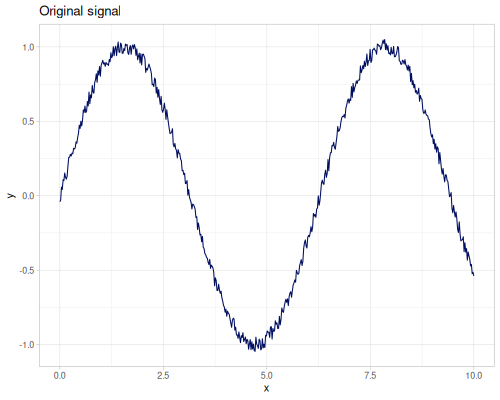
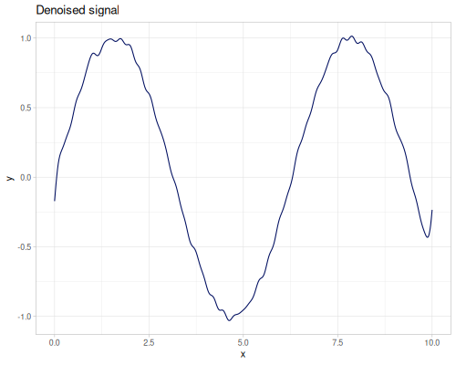

Transforms
(gg/->file (gg/functions [["basic" m/sin]
["noisy" (fn [x] (+ (m/sin x) (* 0.2 (- (rand) 0.5))))]]
{:x [m/-TWO_PI m/TWO_PI]
:ylim [-2 2]
:steps 500
:palette gg/palette-blue-0}))
(gg/->file (gg/function2d (fn [[x y]] (m/sin (m/* x (m/cos y)))) {:x [m/-TWO_PI m/TWO_PI]
:y [m/-TWO_PI m/TWO_PI]
:title "sin(x*cos(y))"
:legend-name "value"}))
(gg/function2d (fn [[x y]] (m/sin (m/* x (m/cos y)))) {:x [m/-TWO_PI m/TWO_PI]
:y [m/-TWO_PI m/TWO_PI]
:title "sin(x*cos(y))"
:legend-name "value"})
(gg/function m/tan {:x [m/-TWO_PI m/TWO_PI]
:title "tan(x)"
:ylab "y=tan(x)"
:ylim [-2 2] ;; we need to limit y axis
:steps 500})
(let [xs (repeatedly 2000 r/grand)
ys (map (fn [x] (+ (r/grand (+ 0.1 (* x 0.5))) (m/sin (* 2 x)))) xs)]
(gg/scatter xs ys {:title "Scatter"}))
(let [xy (take 1000 (r/sequence-generator :r2 2))]
(gg/scatter xy nil {:title "R2 low-discrepancy sequence generator"}))
(gg/functions [["tan" m/tan]
["cot" m/cot]
["sin" m/sin]
["cos" m/cos]]
{:x [m/-TWO_PI m/TWO_PI]
:title "Basic trigonometric functions"
:ylim [-2 2]
:steps 500
:palette gg/palette-blue-1})
(gg/->file (gg/function m/sec
{:x [m/-TWO_PI m/TWO_PI]
:ylim [-2 2]
:steps 500}))
General description of the topic
transformerforward-1d,forward-2dreverse-1d,reverse-2d
FFT
Details about FFT and use-cases
Some examples:
(def fft-real (t/transformer :real :fft ))(seq (t/forward-1d fft-real [1 2 -10 1])) ;; => (-6.0 -12.0 11.0 -1.0)
(seq (t/reverse-1d fft-real [-6 -12 11 -1])) ;; => (1.0 2.0 -10.0 1.0)Wavelets
Compression and denoising
An use case with charts
(def domain (m/slice-range 0 10 512))(def signal (map (fn [x] (+ (Math/sin x)
(* 0.1 (- (rand) 0.5)))) ;; add some noise
domain))(def denoised-signal (t/denoise fft-real signal {:method :hard}))|  |  |
Reference
fastmath.transform
Transforms.
See transformer and TransformProto for details.
### Wavelet
Based on JWave library.
Be aware that some of the wavelet types doesn’t work properly. :battle-23, :cdf-53, :cdf-97.
### Cos/Sin/Hadamard
Orthogonal or standard fast sine/cosine/hadamard 1d transforms.
### Fourier
DFT, FFT, DHT.
compress
(compress trans xs mag)(compress xs mag)
Compress transformed signal xs with given magnitude mag.
compress-peaks-average
(compress-peaks-average trans xs)(compress-peaks-average xs)
Compress transformed signal xs with peaks average as a magnitude
denoise
(denoise xs {:keys [method threshold skip], :or {method :hard, threshold :universal, skip 0}})(denoise trans xs method)(denoise xs)
Wavelet shrinkage with some threshold.
Methods can be: * :hard (default)
* :soft * :garrote * :hyperbole
:threshold can be a number of one of the denoise-threshold methods (default: :visu)
:skip can be used to leave :skip number of coefficients unaffected (default: 0)
Use on transformed sequences or call with transformer object.
denoise-threshold
(denoise-threshold xs threshold)
Calculate optimal denoise threshold.
threshold is one of the following
:visu- based on median absolute deviation estimate (default):universal- based on standard deviation estimate:sureor:rigrsure- based on SURE estimator:hybridor:heursure- hybrid SURE estimator
forward-1d
(forward-1d t xs)
Forward transform of sequence or array.
forward-2d
(forward-2d t xss)
Forward transform of sequence or array.
reverse-1d
(reverse-1d t xs)
Forward transform of sequence or array.
reverse-2d
(reverse-2d t xss)
Forward transform of sequence or array.
transformer
Create transform object for given wavelet.
#### Wavelets
:fastfor 1d or 2d Fast Wavelet Transform. Size of data should be power of2.:packetfor 1d or 2d Wavelet Packet Transform. Size of data should be power of2.:decomposed-fastfor 1d Fast Wavelet Transform. Data can have any size (Ancient Egyptian Decomposition is used).:decomposed-packetfor 1d Wavelet Packet Transform. Data can have any size (Ancient Egyptian Decomposition is used).
Second argument is wavelet name as key. See wavelets-list for all supported names.
#### Sine/Cosine/Hadamard
:standardfor 1d:sine,:cosine,:hadamard.:orthogonalfor 1d:sine,:cosine.
Note that :sine and :cosine require first element to be equal 0. Size of data should be power of 2.
#### Fourier
:standard:dft- 1d Discrete Fourier Transform - returns double-array where even elements are real part, odd elements are imaginary part.
wavelets-list
List of all possible wavelets.
source: clay/transform.clj